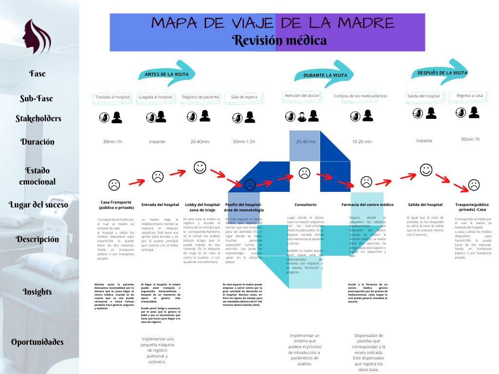

En esta semana se avanzó y definió la problemática, se crearon los cuadros de usuarios, de empatía y un diagrama de Ishikawa sobre causas y efectos de prematuridad
Ministerio de Salud, BOLETÍN EPIDEMIOLÓGICO DEL PERÚ. Ministerio de Salud, 2020.
[2](BOLETÍN EPIDEMIOLÓGICO DEL PERÚ. Ministerio de Salud, (2020))
Ministerio de Salud, BOLETÍN EPIDEMIOLÓGICO DEL PERÚ. Ministerio de Salud, 2020.
[2](BOLETÍN EPIDEMIOLÓGICO DEL PERÚ. Ministerio de Salud, (2020))
[3]Mesa de concertación, Registro de recién nacidos en madres menores a 15 años. 2017.
[4]INEI-ENDES, Cuadro estadístico sobre porcentaje de mujeres entre 15 y 19 años que son madres por primera vez.. 2017.
Criterios que rigen el patrón de embarazos a edades temprana
[6]Mesa de concertación, Criterios de evaluación de mujeres según su contexto socioeconómico. 2017.
Porcentajes de mujeres que son madres en relación al rango de edad
[5]Mesa de concertación, Porcentaje de mujeres que son madres en función al rango de edad. 2017.
[7]Mesa de concertación, Récord del SIS de partos en estimación. 2020.
El SIS reporta anualmente aporximadamente 2 mil partos atendidos en los establecimientos de la salud en niñas entre 11 y 14 años de edad.
[8](Nacimientos prematuros" 2020)
Elaboración del equipo
Los 10 países con mayor número de nacimientos prematuros
Elaboración del equipo
Los 8 países con las tasas más elevadas de nacimientos prematuros por cada 100 nacidos vivos
Así mismo la OMS concluyo que de los 65 países que disponen de datos fiables sobre tendencias, todos menos tres han registrado un aumento en las tasas de nacimientos prematuros en los últimos 20 años. Finalmente existen grandes diferencias en las tasas de supervivencia de los bebés prematuros, en función del lugar donde hayan nacido. Por ejemplo, más del 90% de los prematuros extremos (menos de 28 semanas) nacidos en países de ingresos bajos muere en los primeros días de vida; sin embargo, en los países de ingresos altos muere menos del 10% de los bebés de la misma edad gestacional.[8](Nacimientos prematuros" 2020)
P. Duran, “La Prematuridad en la Región de las Américas y sus costos No existen potenciales conflictos de intereses. CENTRO LATINOAMERICANO DE PERINATOLOGIA -SALUD DE LA.”
P. Duran, “La Prematuridad en la Región de las Américas y sus costos No existen potenciales conflictos de intereses. CENTRO LATINOAMERICANO DE PERINATOLOGIA -SALUD DE LA.”
P. Duran, “La Prematuridad en la Región de las Américas y sus costos No existen potenciales conflictos de intereses. CENTRO LATINOAMERICANO DE PERINATOLOGIA -SALUD DE LA.”
Por ello la salud neonatal es una prioridad de salud pública que busca continuar mejorando las competencias del enivel nacional a través del Programa de Telemedicina y Asistencia Técnica Directa, tanto en el manejo y atención del recién nacido prematuro como de la prevención y amenaza de parto prematuro
Mobirise site builder - Details here